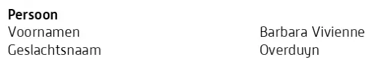
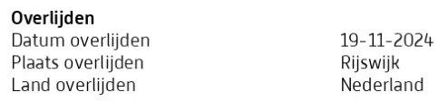

Prueba · Registro
Extracto del registro de población de Barbara Overduyn, grafía oficial de su nombre
El nombre oficial
«Persona · Nombres: Barbara Vivienne · Apellido: Overduyn» El bloque «Persoon» (persona) de la página 1, el encabezado y los dos primeros campos. Los dos puntos y los puntos medios se han añadido aquí para facilitar la lectura. Traducido del neerlandés; el texto original figura a continuación.
“Persoon · Voornamen: Barbara Vivienne · Geslachtsnaam: Overduyn” Texto original

El fallecimiento
«Fallecimiento · Fecha de fallecimiento: 19-11-2024 · Lugar de fallecimiento: Rijswijk · País de fallecimiento: Países Bajos» El bloque «Overlijden» (fallecimiento) de la página 1, el encabezado y las tres líneas sobre el fallecimiento. El documento es un formulario; el bloque consta, por tanto, de un encabezado con tres nombres de campo y sus valores, impresos en dos columnas. Los dos puntos y los puntos medios en lugar de los saltos de línea se han añadido aquí. Traducido del neerlandés; el texto original figura a continuación.
“Overlijden · Datum overlijden: 19-11-2024 · Plaats overlijden: Rijswijk · Land overlijden: Nederland” Texto original

Por qué importa este documento
Este extracto del registro de población recoge el nombre oficial de la demandante: Barbara Vivienne Overduyn. Esto es importante porque la grafía de su nombre era una de las dos inexactitudes no controvertidas del libro, según el Tribunal de Apelación de La Haya en 2016. El autor escribió «Overduin», la grafía de la investigación interna del MID (servicio de inteligencia militar) del 12 de febrero de 1999. Ese mismo año, ella misma firmó un fax al Defensor del Pueblo de los Países Bajos (Nationale ombudsman) como «Overduijn», y el tribunal constató que en él no escribía su nombre correctamente.
El documento es un extracto de la Basisregistratie Personen, el registro de población neerlandés, y procede de los archivos del último municipio en que residió. En él consta también que falleció el 19 de noviembre de 2024 en Rijswijk; en ese año se basa la observación del ensayo de que el Ministerio de Defensa sigue manteniendo su propia postura incluso después de la muerte de su testigo principal. Los datos de sus padres, su inscripción y cada una de sus direcciones están tachados.
Procedencia
- Documento
- Extracto del registro de población (persoonslijst), procedente de la Basisregistratie Personen, dos páginas
- Expedido por
- Stichting Centraal Bureau voor Genealogie, que figura en el extracto como CBG Centrum voor familiegeschiedenis
- Fuente de los datos
- El último municipio de residencia de la difunta. Ese municipio facilitó los datos al CBG. El CBG los proporciona sobre la base de una autorización y de acuerdos con el Ministerio del Interior, recogidos en la Wet BRP y en la Regeling BRP
- Persona
- Barbara Vivienne Overduyn, nacida el 28 de noviembre de 1964 en ’s-Gravenhage (La Haya)
- Fecha
- Fallecida el 19 de noviembre de 2024 en Rijswijk. El extracto mismo no lleva fecha de expedición
- Referencia
- Extracto del registro de población 0000/4458669. El número de deudor figura como 0000
- Tachado
- Los dos campos de los padres, el campo de inscripción y todos los campos de dirección, actuales e históricos, están tachados en esta copia
- Idioma
- Neerlandés
- Conservado por
- Archivo del autor
- Véase también
- Investigación interna para el jefe de Estado Mayor del MID, 12 de febrero de 1999Barbara Overduyn al Defensor del Pueblo de los Países Bajos, fax firmado, 16 de septiembre de 1999Tribunal de Apelación de La Haya, sentencia del 12 de abril de 2016 (ECLI:NL:GHDHA:2016:870)
Citado en: el ensayo «La prohibición cayó, el libro quedó en pie» en los capítulos (1) «Un precedente único» y (11) «Poner fin al silencio sobre Srebrenica».
Ficha de prueba: https://
Documento: https://
Modificado por última vez el 13 de septiembre de 2026, consultado el 27 de noviembre de 2026.

Esta página es una ficha de prueba del libro El general del encubrimiento de Edwin Giltay y del sitio web que lo acompaña.